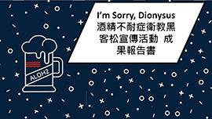
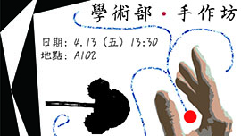
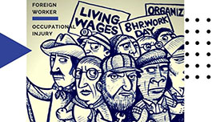

活動回顧
106學年下學期
1SCOPH黑克松
2創意毛球工作坊
想要嘗試手工藝，卻苦於沒有接觸機會嗎?想要自己動手做出可愛的作品，卻擔心自己手藝不好嗎?讓創意毛球工作坊帶著你動動手，做出毛茸茸的可愛毛球吧!準備好了嗎?讓我們拿起毛線和剪刀，進入手工藝的世界吧!
3系友回娘家
馬偕醫院婦產科 李晟令醫師演講的過程中，適用類似分享會的方式，沒有使用PPT或是麥克風，就站在250B的座位前和我們分享，讓我們倍感親切。在演講中，我們了解現在的醫療環境，我們會遇到的問題，抑或是慈濟與外面的差異。從慈濟畢業的學長的口中聽到的建議，將會是最貼近我們最有效的幫助了。

5系刊:六年制挑戰
醫學系第一屆六年制面臨沒有實習醫學生(intern)這年的訓練與外放機會，2018年底就要跟上一屆的學長姐一起申請未來要工作的醫院。對職場上的選擇與面試感到迷茫的第一屆六年制醫學生該怎麼辦?
6AMSC徵選
亞洲醫學生會議（AMSC）為醫學生在暑假亞醫的一大盛事。每個與會國會派出一般代表及學術代表參加。 此次活動便是為了甄選對議題有豐富了解、能積極投入交流的一般代表，展現慈濟醫學醫療議題的熱忱。
7SCORP勞動週
8SCORP工作坊
歷屆活動回顧